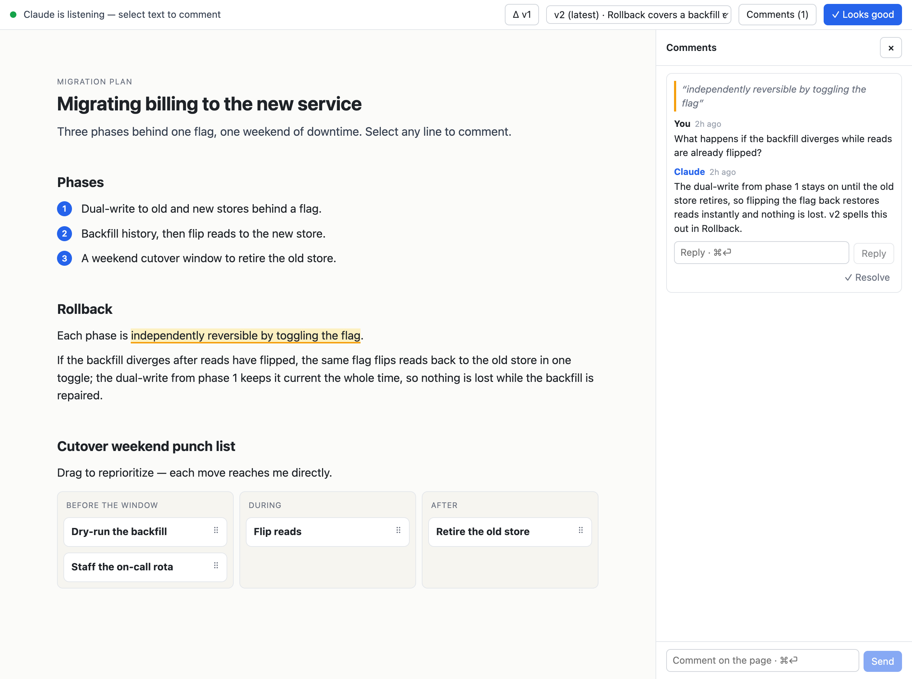

colloquy · a Claude Code plugin
Stop reading Claude's plans in the terminal.
Claude hands you a web page instead. Select any line and comment on it like a shared doc; the comment itself wakes Claude, and a revised version arrives with the change.
It works for anything that would otherwise land as a wall of terminal
text: a migration plan, an architecture write-up, an incident diagnosis, a PR
walkthrough, a review. Two commands install it. No accounts,
no daemon, no config; you need uv
on your PATH and a browser on the same machine.

A review, end to end
- Ask. "Write up the migration options as a page"
triggers it, as does
/colloquy. Claude writes the page, serves it on a loopback port, and prints the URL. - Mark it up. Select any passage and comment; the comment anchors to it and stays anchored as versions change. Diagrams and images take comments by click, and a suggestion mode proposes replacement text that Claude takes verbatim or answers with why not.
- Your comment wakes Claude. The session's turn
ends on a background
waitthat exits the moment an event lands, re-invoking Claude. Nothing runs between rounds. - A revision ships. Versions are immutable, each with a one-line changelog. The page follows the newest while keeping your place on it, and the Δ toggle marks every passage that changed since the version before.
- Sign off. "✓ Looks good" closes the review;
pages that seek approval carry the button, informational ones take comments only.
exportprints the whole thread as Markdown for a PR description.
The page takes edits, too
Pages are semantic HTML plus themed widgets: decision cards, kanban boards, mermaid diagrams, diffs, timelines. The interactive ones carry input back. Drag a card between columns or click an option to pick it, and the edit reaches Claude as a structured action; the next version ships with the board as you left it and your pick marked.
How it works shows the widget system rendering live, and the examples gallery holds six complete pages.
Guarantees
- Anchors survive. Comments pin to element ids and carry across versions; when a passage leaves the version on screen, its thread shows the quote dimmed rather than a link that goes nowhere.
- Nothing you type is lost. Drafts in the comment box, every reply, and the selection composer survive reload, version switches, and server death; only a successful send clears them.
- Nothing broken goes live. A deterministic lint gates every version; the browser sees it only once it passes and its changelog note lands.
- Dark mode is one token block. Every surface in the theme and the injected comment layer rides a token, so the whole page (this one included) follows your OS setting.
Install
/plugin marketplace add max-sixty/colloquy
/plugin install colloquy@colloquyThen ask Claude to "write it up as a page", or run /colloquy.
Claude also reaches for it on its own when a plan or write-up would be easier to
review as a page than as terminal text.
How it works · GitHub · examples · MIT license